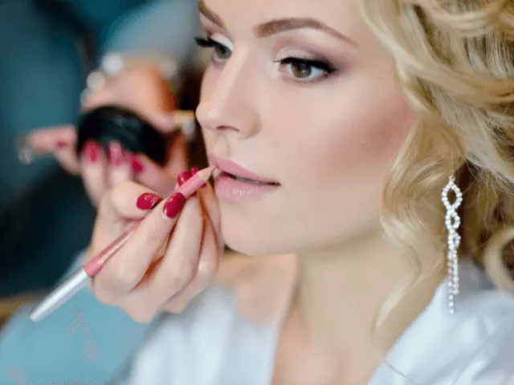

Partnerbijdrage
Van proefopmaak tot het perfecte plaatje. Maak gebruik van een Visagiste
Gepubliceerd op 30 maart 2023, bijgewerkt op 26 februari 2024
Onderdeel van de gids Trouwen in Nijmegen

Wat kan een visagiste allemaal voor jou doen?
Een visagiste kan jouw trouwdag naar een hoger niveau tillen. Door haar kennis en vaardigheden kan ze jouw make-up perfect laten aansluiten bij de stijl van je jurk en de setting van de bruiloft, en rekening houdend met jouw persoonlijke voorkeuren. Tijdens een proefsessie kun je verschillende looks uitproberen en advies krijgen over welke technieken het beste bij jou passen. Op je trouwdag zorgt de visagiste ervoor dat je er perfect uitziet, terwijl ze ook als rustgevende aanwezigheid fungeert in wat vaak al een stressvolle dag is. Zo kun je vol vertrouwen beginnen aan je trouwdag.
Waar moet je op letten bij het kiezen van een bruidsvisagiste?
Bij het kiezen van een bruidsvisagiste zijn er verschillende factoren om rekening mee te houden:
Portfolio: Bekijk het portfolio van de visagiste om te zien of haar stijl en vaardigheden aansluiten bij jouw wensen. Let hierbij ook op de diversiteit van haar werk om te zien of ze in staat is om verschillende looks te creëren.
Ervaring: Vraag naar de ervaring van de visagiste. Heeft ze eerder bruidsmake-up gedaan? Hoe lang doet ze dit werk al? Ervaring kan zorgen voor meer vertrouwen en minder stress op de grote dag.
Reviews: Lees reviews van eerdere klanten, het liefst bruiden, om te zien hoe zij de dienstverlening van de visagiste hebben ervaren.
Proefsessie: Plan een proefsessie om de visagiste te leren kennen en verschillende looks uit te proberen. Dit geeft je de kans om te zien of de visagiste begrijpt wat jij wilt en of de communicatie goed verloopt.
Tarieven en beschikbaarheid: Vraag naar de tarieven en beschikbaarheid van de visagiste. Zo weet je wat je kunt verwachten en of de visagiste beschikbaar is op jouw trouwdag. Best wel handig natuurlijk!
Door rekening te houden met deze factoren kan je een bruidsvisagiste kiezen die bij jou past en ervoor zorgen dat jij op jouw trouwdag straalt als nooit te voren!

Heb je een klein budget en wil je toch stralen in je make-up, wij hebben tips!
- Zoek naar beginnende visagistes: Als je een visagiste vindt die net is begonnen, kan zij mogelijk haar diensten aanbieden tegen een lagere prijs. Zij kan dan nog niet dezelfde prijzen vragen als een meer ervaren visagiste.
- Vraag een vriend of familielid: Misschien ken je iemand in jouw vrienden- of familiekring die een passie heeft voor make-up en visagie en die het leuk zou vinden om je op je trouwdag op te maken. Dit kan een goedkopere optie zijn en kan ook een persoonlijke touch geven aan je look.
- Zoek naar aanbiedingen: Sommige visagistes bieden kortingen aan voor groepen of op bepaalde dagen. Je kunt ook op zoek gaan naar kortingsbonnen of deals online.
- Boek alleen een proefmake-up: Als je het budget hebt voor een proefmake-up, boek dan alleen dat. Neem foto’s en aantekeningen van wat je mooi vond en wat niet, en probeer het zelf te recreëren op de trouwdag.
- Doe het zelf: Als je handig bent met make-up, kun je ervoor kiezen om jezelf op te maken op je trouwdag. Je kunt online tutorials bekijken en oefenen tot je tevreden bent met het resultaat.
- Als je handig bent met make-up, kun je ervoor kiezen om jezelf op te maken op je trouwdag. Je kunt online tutorials bekijken en oefenen tot je tevreden bent met het resultaat.
Welke bruidsvisagistes raden wij aan in Nijmegen?
Knapsels: Janet Fiévez-Smolders en Elyse Smetsers zijn gepassioneerde haarstylistes en visagistes.. Beiden streven ze ernaar om het beste uit hun klanten te halen met persoonlijke aandacht, service en kwaliteit. Ze zijn gepassioneerd over het creëren van unieke en prachtige looks die het karakter van hun klanten benadrukken.
De bruidsmit: Sanne Smits is een ervaren kapper en visagiste met meer dan 12 jaar ervaring. In 2018 heeft ze haar eigen zaak, De Haarsmit, opgericht in het centrum van Nijmegen. Haar passie voor bruidsstyling begon in 2015 toen ze haar eerste bruid mocht stylen en ze wist meteen dat dit haar roeping was. Sanne’s doel is om jou op je grote dag te laten stralen en het mooiste uit jou te halen op een natuurlijke manier.
Kristel van Heugten: Kristel legt de nadruk op jouw sterke kanten. Ze kan ervoor zorgen dat jouw make-up de hele dag perfect zit. Ze kan je adviseren op het gebied van kleuren en ze luistert naar jouw wensen en de stijl die jij wil!
Salon Lycka: Bij Bernadette van Gelder, kun je voor vele behandelingen terecht, en zeker ook voor de visagie van jouw grote dag. Wie weet wil je eerst wel een heerlijke behandeling, of ook nog even de wenkbrauwen en wimpers laten doen? Dat kan hier allemaal.